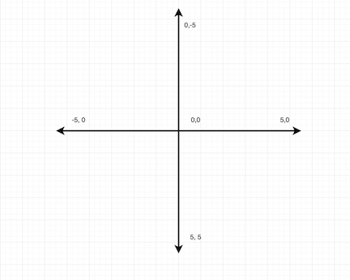
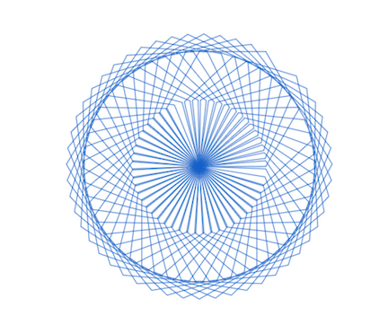

Week 4: Session 2
GUI: Graphical User Interface
Most computer users interact with a GUI. The command line is used by programmers and admins. Python includes a library that creates a GUI. We'll look at how we can create a GUI using the Turtle library.
GUI's rely on a window or canvas to draw on. There is a 2 dimensional coordinate system where you can write pixels. It is important to know the layout of this coordinate system so you can place your pixels in the intended location. The Turtle grid has is origin (0,0) in the middle of the canvas.

The way to think abut using Turtle is this: there is a turtle with a pen on its back and it walks around on the canvas. When the pen goes down, the pixels are recorded on the canvas. When the pen is up nothing is recorded.
The turtle can be programmed using all of the python data structures and commands that you have learned. The code for mosaic below was drawn with Turtle. The turtle can move forward and backward and turns are specified by right and left. The parameters accepted by forward and backward are the number of pixels to write. The parameters accepted by left and right are the degrees. A line is 180 degrees, a right angle is 90 degrees and a circle is 360 degrees.

The function to draw the mosaic contains code that will look familiar.
def draw(color,sides,size,loops):
myPen.color(color)
for i in range(0,loops):
for j in range (0,sides):
myPen.forward(size)
myPen.left(360 / sides)
myPen.left(360 / loops)
Activity 3: Work on a Final Project
- Flow chart
- Decision making: variables, logic, looping
- Input/Output: Console, File, Internet
- Libraries
- Objects